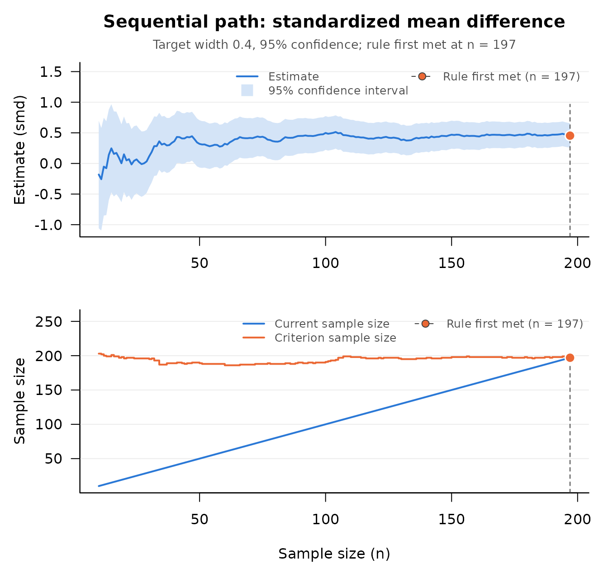
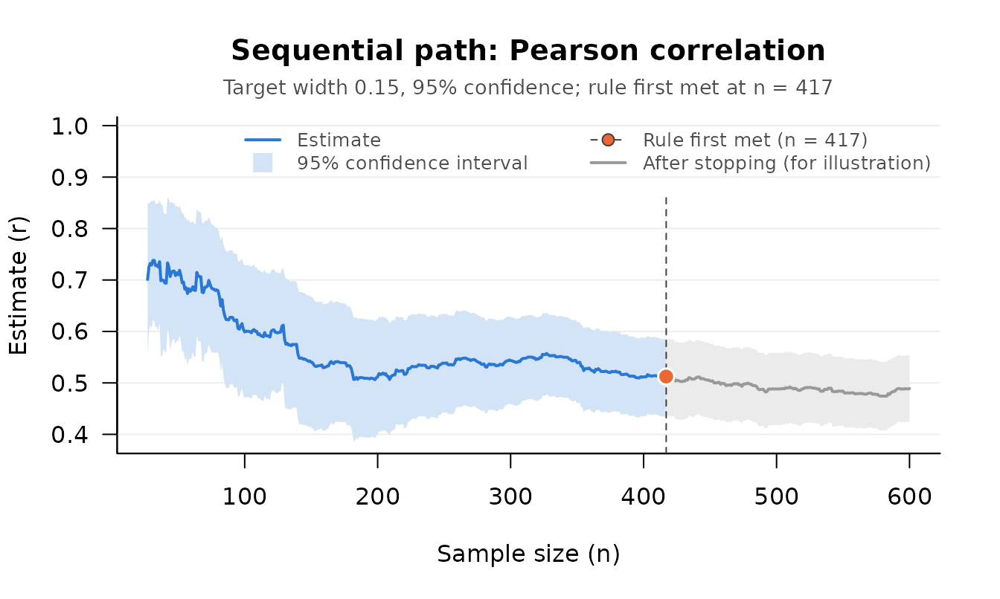
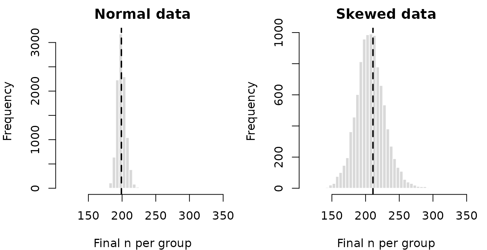

Why Sequential Design
Planning a sample size ordinarily requires the very quantities the study is meant to estimate. A sample size for a target power needs the effect size. A sample size for a confidence interval of a target width needs the sampling variance of the estimator, which for most effect sizes depends on the effect size itself and on the shape of the distribution of the data. When the planning values are wrong, the study is too small for its purpose or larger than it needed to be (Maxwell, Kelley, & Rausch, 2008).
Accuracy in parameter estimation (AIPE) plans a study around the
width of the confidence interval rather than the outcome of a
significance test: the aim is an interval no wider than a value ω that
the researcher judges informative (Kelley, 2007a, 2008; Kelley &
Lai, 2011; Kelley & Maxwell, 2003; Kelley & Rausch, 2006). The
fixed sample size form of AIPE, in which the sample size follows from
planning values, is in the companion package DMAR, the
successor to MBESS (Kelley, 2007b).
SMSD (“Sequential Methods for Study Design”) is for the
case in which no trustworthy planning value exists. Data are collected
in stages, and a stopping rule computed from the data in hand says when
there are enough. The package has four families of procedures.
-
Sequential AIPE (
seq_aipe_*()): a confidence interval no wider than ω for the standardized mean difference, the coefficient of variation, the standardized mean, the regression slope, and a contrast of means (Kelley, Darku, & Chattopadhyay, 2018); for Pearson’s correlation, Kendall’s tau, Spearman’s rho, and the squared multiple correlation (Kelley, Darku, & Chattopadhyay, 2019); and for the Gini index (Chattopadhyay & De, 2016). -
Minimum risk point estimation
(
seq_mr_cv(),seq_mr_smd()): the sample size that minimizes the cost of estimation error plus the cost of sampling (Chattopadhyay & Kelley, 2016, 2017). -
A budget constrained procedure
(
seq_budget()): a contrast of several population means estimated as precisely as a fixed budget allows when an observation costs a different amount in each population (Chattopadhyay, Bandyopadhyay, Kelley, & Padalunkal, 2025). -
Classical procedures for a mean, the location of a
negative exponential distribution, or a median
(
seq_fwd_*(),seq_mr_*_mean(),seq_mr_dfr_mean_arb(),seq_br_norm_mean(),ts_*(),seq_blci_dfr_median()), from the two stage and purely sequential tradition of Stein (1945), Anscombe (1953), Robbins (1959), and Chow and Robbins (1965), as collected by Mukhopadhyay and de Silva (2009).
This vignette goes through all four with code that runs, in the order in which a user calls the functions. It ends with a Monte Carlo study of two of the procedures, 10,000 replications per condition, computed once and stored in the package, that shows where the intervals can be trusted and where they cannot. The same cached file holds several thousand simulated studies of the design of each example, so every section can say how its own design behaves in the long run.
The Shared Engine
The seq_aipe_*() procedures are built from the same
three pieces. (The squared multiple correlation, Method 3 below, has the
same structure with a pilot rule and correction terms of its own.) Write
ω for the target full width of the confidence interval (the argument
width: the upper limit minus the lower limit), z
for the standard normal quantile of the confidence level (1.96 at 95%),
and ξ2 for the asymptotic variance of the estimator, that is,
the limit of n times its sampling variance.
A pilot sample size. Before any data exist, only ω and the confidence level are known. The first check is made at
m = max{ m0, ⌈2z / ω⌉ }
observations (per group, in a design with groups), where ⌈ ⌉ rounds
up and m0 is a minimum, 4 by default (Kelley, Darku,
& Chattopadhyay, 2018, Equation 21; 2019, Equation 9). Each
seq_aipe_*_pilot() function returns this number.
A stopping rule. At the pilot sample size and after every addition, sampling stops at the first n for which
n ≥ (2z / ω)2 × (the estimate of ξ2 + 1/n)
(2018, Equation 22; 2019, Equation 10). The estimate of ξ2
is computed from the data in hand without assuming a distribution, and
1/n is a correction that keeps the rule from being met too
early. The quantity on the right, rounded up, is the row
criterion_n of every check.
A confidence interval. At the stopping point the interval is
the estimate ± z × √(the estimate of ξ2 / n)
(2018, Equation 23; 2019, Equation 11), symmetric about the estimate on the scale of the effect size.
Two Guarantees of Different Kinds
The width is guaranteed. Whenever the rule is met the interval is no wider than ω, in every sample, because the rule is the width requirement solved for n.
The coverage is not guaranteed at any particular width. The articles prove that the probability that the interval contains the population value approaches the confidence level as ω shrinks, and so as the final sample grows (2018, p. 232; 2019, p. 495). How close it is at a width a researcher might choose depends on the effect size and on its true value. For some effect sizes it is at the confidence level already at wide targets; for others it falls well short. Each section below says which, with the measured figure, and the study at the end shows the pattern in detail for two effect sizes.
When the Variance Estimate Is Not Yet Usable
Several of the variance estimators are differences of moment terms, and in a small sample they can come out zero or negative. The articles bound the estimate below by n−3 (2018, Equation 27; 2019, Equation 8, which has n−γ and is used with γ = 3 throughout, p. 494), and the 2019 article calls a negative estimate a chance that is positive “even though negligible” (p. 494). At small pilot sample sizes it is not negligible: in the study at the end of this vignette, the estimate was zero or negative at one or more checks in 31.7% of the studies of a correlation of 0.7 at a target width of 0.30. Under the rule as printed, the bound would stand in for such an estimate and sampling would end at once with an interval far narrower than the data support.
The package departs from the printed rule here, deliberately. When
the raw variance estimate is zero, negative, or not finite, no variance
has been estimated: the check reports the stopping rule as not
met, the confidence limits are NA,
criterion_n is at least one more than the current sample
size, the attribute variance_unusable is TRUE,
and a note says why. Sampling continues. A positive estimate, however
small, is used as the articles prescribe (the larger of it and
n−3).
A pilot sample of ten pairs with a true correlation of 0.8 shows what such a check looks like.
set.seed(113)
m <- seq_aipe_r_pilot(width = 0.40)
x <- rnorm(m)
y <- 0.8 * x + 0.6 * rnorm(m)
seq_aipe_r(x, y, width = 0.40)
#> Sequential check (Pearson correlation)
#>
#> Current n : 10
#> Criterion n : 11
#> Target width : 0.4
#> Confidence level: 95%
#> Coverage : asymptotic; assess with sensitivity analysis
#>
#> lower_limit : NA
#> r : 0.8612146
#> upper_limit : NA
#> xi_squared : 0.001
#> criterion_n : 11
#> current_n : 10
#>
#> Stopping rule met: FALSE
#>
#> Note: The variance estimate is not yet usable at this sample size (it
#> is zero, negative, or not finite), so the stopping rule is
#> reported as not met. Collect more data and check again.The remedy is the one the note gives: collect more data and check
again. A loop written on attr(out, "is_satisfied") does
that without any special handling.
The Single Call Contract
A sequential study runs over weeks or months, but no function in the
package waits, prompts, or keeps state. For a procedure
seq_X:
-
seq_X_pilot()returns the pilot sample size, an integer. -
seq_X()takes all the data collected so far, evaluates the stopping rule once, and returns an object of classsmsd_check: a data frame with columnstermandvalue, with the decision inattr(out, "is_satisfied"), which is alwaysTRUEorFALSE. The user calls it again whenever more data are in. -
print(),summary(), andas.data.frame()methods, andtidy()andglance()methods for the generics of thegenericspackage, present the object; the stored values are never rounded. -
seq_path()applies a check function to data in hand at every successive sample size and returns the whole path, with aplot()method. -
seq_report()writes the paragraph for a methods section. -
seq_X_sensitivity()simulates the whole procedure before any data are collected. Everyseq_aipe_*()procedure, both minimum risk procedures, and the budget constrained procedure have one. (For the correlation it simulates the Pearson coefficient only; the measured coverage of the Kendall and Spearman intervals is on the help page ofseq_aipe_r().)
Method 1: The Standardized Mean Difference, Step by Step
The standardized mean difference is δ = (μ1 − μ2) / σ, the difference between two population means in units of their common standard deviation (Cohen, 1988; Kelley & Rausch, 2006). Its sequential AIPE procedure is developed in detail by Kelley, Darku, and Chattopadhyay (2018).
A human resources team introduces a training program and compares the engagement ratings (on a 1 to 7 scale) of trained employees with those of a control group. They want a 95% confidence interval for δ no wider than ω = 0.40. They do not know δ, so they cannot fix the sample size honestly in advance. In this illustration the data are simulated with means 4.9 and 4.5 and a standard deviation of 0.8 in both groups, so the true value is δ = 0.4 / 0.8 = 0.5.
First, the pilot sample size, and the first check on that many employees per group.
set.seed(113)
width <- 0.40
m <- seq_aipe_smd_pilot(width = width)
m
#> [1] 10
new_ratings <- function(k, mean) rnorm(k, mean = mean, sd = 0.8)
trained <- new_ratings(m, 4.9)
control <- new_ratings(m, 4.5)
out <- seq_aipe_smd(trained, control, width = width)
out
#> Sequential check (standardized mean difference)
#>
#> Current n : 10
#> Criterion n : 203
#> Target width : 0.4
#> Confidence level: 95%
#> Coverage : asymptotic; assess with sensitivity analysis
#>
#> lower_limit : -1.059864
#> smd : -0.1811592
#> upper_limit : 0.6975454
#> xi_squared : 2.009971
#> criterion_n : 203
#> current_n : 10
#>
#> Stopping rule met: FALSEThe check reports the estimate and its interval, the variance
estimate (xi_squared), the sample size per group that the
rule currently requires (criterion_n), and the decision.
With 10 per group against a criterion of 203, the rule is not met. The
team adds one employee to each group and checks again, until it is. This
loop is the whole of a sequential study: collect, check, and stop at the
first check that is met.
while (!attr(out, "is_satisfied")) {
trained <- c(trained, new_ratings(1, 4.9))
control <- c(control, new_ratings(1, 4.5))
out <- seq_aipe_smd(trained, control, width = width)
}
out
#> Sequential check (standardized mean difference)
#>
#> Current n : 197
#> Criterion n : 197
#> Target width : 0.4
#> Confidence level: 95%
#> Coverage : asymptotic; assess with sensitivity analysis
#>
#> lower_limit : 0.2542193
#> smd : 0.4539282
#> upper_limit : 0.6536371
#> xi_squared : 2.045338
#> criterion_n : 197
#> current_n : 197
#>
#> Stopping rule met: TRUEThe rule is met at 197 employees per group. The interval, [0.254, 0.654], is 0.399 wide, within the target of 0.4, and it contains the value used to generate the data, 0.5. The team never supplied a guess of δ or of the shape of the ratings.
The object is an ordinary data frame underneath, and its methods return what further computation needs.
summary(out)
#> method estimate_term estimate lower_limit upper_limit
#> 1 standardized mean difference smd 0.4539282 0.2542193 0.6536371
#> current_n criterion_n is_satisfied conf_level width
#> 1 197 197 TRUE 0.95 0.4
generics::tidy(out)
#> term estimate ci_lower ci_upper conf_level
#> 1 smd 0.4539282 0.2542193 0.6536371 0.95
out$value[out$term == "smd"]
#> [1] 0.4539282The Path and the Report
seq_path() applies the same check to data in hand at
every sample size from the pilot on. For the data just collected it
returns the path the study followed, and plot() draws it:
the interval narrowing toward its target width, and the current sample
size meeting the criterion.
path <- seq_path(seq_aipe_smd, list(group_1 = trained, group_2 = control),
width = width)
plot(path)
seq_report() turns a check or a path into the paragraph
a methods section needs, with the reference for the procedure.
seq_report(path)
#> Sample size was determined with the sequential accuracy in parameter
#> estimation procedure for the standardized mean difference (Kelley,
#> Darku, & Chattopadhyay, 2018), with a target full width of 0.4 for the
#> 95% confidence interval. The stopping rule was evaluated from the pilot
#> sample size (n = 10 per group) onward, after each additional
#> observation per group, and was first met at n = 197 per group. At that
#> sample size the estimate of the standardized mean difference was 0.454,
#> 95% CI [0.254, 0.654]. The confidence level is asymptotic; meeting the
#> width target does not establish nominal coverage at this sample size.
#>
#> Reference
#> Kelley, K., Darku, F. B., & Chattopadhyay, B. (2018). Accuracy in
#> parameter estimation for a general class of effect sizes: A
#> sequential approach. Psychological Methods, 23(2), 226–243.
#> doi:10.1037/met0000127The Correction to Equation 26
For this effect size the variance estimator is the one under Equation 27 of the 2018 article, with one correction. Equation 26 as printed, and its sample version, omit a factor of 1/2 in the term that carries the third central moments of the two groups. The package implements the corrected variance. The two forms differ only when the groups differ both in their means and in their third central moments; for groups of the same shape they agree. The authors’ correction is posted at https://kenkelley.org/wp-content/uploads/articles/Kelley_Darku_Chattopadhyay_Equation_26.pdf and is installed with the package:
file.exists(system.file("eq26_correction.pdf", package = "SMSD"))
#> [1] TRUEHow Far to Trust the Interval
For the standardized mean difference the asymptotic guarantee is already good at this width. In the verification study at the end of this vignette, the design used here (δ = 0.5, ω = 0.40, normal data) covered δ in 95.1% of 10,000 simulated studies, with a mean final sample size of 199.1 per group. With right skewed data in both groups the figure was 94.6%.
Method 2: Correlation Coefficients
Kelley, Darku, and Chattopadhyay (2019) give the sequential AIPE
procedure for a population correlation: Pearson’s product moment
correlation, with a variance estimator built on the joint central
moments of the two variables (their Equation 3 rests on Lee, 1990), and
Kendall’s tau and Spearman’s rho, with rank based estimators. The
method argument of seq_aipe_r() selects the
coefficient.
An information systems researcher relates time on task to a usability rating across users and wants a 95% interval for the correlation no wider than ω = 0.15. The pairs below are simulated, in the order in which they would be observed, from a bivariate normal distribution with ρ = 0.5.
set.seed(113)
rho <- 0.5
time_on_task <- rnorm(600)
usability <- rho * time_on_task + sqrt(1 - rho^2) * rnorm(600)
m <- seq_aipe_r_pilot(width = 0.15)
m
#> [1] 27
pilot_check <- seq_aipe_r(time_on_task[1:m], usability[1:m], width = 0.15)
pilot_check
#> Sequential check (Pearson correlation)
#>
#> Current n : 27
#> Criterion n : 131
#> Target width : 0.15
#> Confidence level: 95%
#> Coverage : asymptotic; assess with sensitivity analysis
#>
#> lower_limit : 0.5526684
#> r : 0.7010378
#> upper_limit : 0.8494072
#> xi_squared : 0.1547235
#> criterion_n : 131
#> current_n : 27
#>
#> Stopping rule met: FALSEThe rule is not met at the pilot. The check also shows how unsettled
the variance estimate is in a small sample: xi_squared is
0.155, where the population value for bivariate normal data is (1 −
ρ2)2 = 0.5625, and criterion_n moves
with it. Rather than add one pair at a time by hand,
seq_path() evaluates the rule at every sample size from the
pilot on. The data go in one list, named after the data arguments of the
check function, so that every stage sees only the pairs observed up to
that point.
path_r <- seq_path(seq_aipe_r, list(x = time_on_task, y = usability),
width = 0.15)
path_r
#> Sequential path: Pearson correlation
#>
#> Stages checked : 574 (n = 27 to 600)
#> First check at : the pilot sample size
#> Target width : 0.15
#> Confidence level: 95%
#> Rule first met : n = 417
#> Estimate there : r = 0.5123491 [0.4378269, 0.5868713]
#>
#> n estimate lower_limit upper_limit criterion_n is_satisfied
#> 27 0.7010378 0.5526684 0.8494072 131 FALSE
#> 28 0.7253972 0.6026905 0.8481038 100 FALSE
#> 29 0.7322770 0.6121176 0.8524364 98 FALSE
#> ...
#> 598 0.4885447 0.4240356 0.5530538 444 TRUE
#> 599 0.4883601 0.4238655 0.5528547 445 TRUE
#> 600 0.4890396 0.4246984 0.5533807 443 TRUE
#>
#> The estimate to report is the one at n = 417. Later rows show what
#> the rule would have said had sampling continued; they are not grounds
#> for choosing a different stopping point.
plot(path_r, which = "estimate")
The estimate to report is the one at the first sample size at which the rule was met, n = 417: r = 0.512, 95% CI [0.438, 0.587], which contains ρ = 0.5. The rows after that point, drawn in gray, show what the rule would have said had sampling continued. They are not grounds for choosing a later stopping point: the width and coverage properties belong to the first sample size at which the rule is met.
The same pairs can be analyzed with a rank based coefficient. Each coefficient estimates its own population value (for bivariate normal data with ρ = 0.5, Kendall’s tau is 1/3 and Spearman’s rho is 0.483) and has its own variance estimator, so each has its own criterion.
c(kendall = 2 / pi * asin(rho), spearman = 6 / pi * asin(rho / 2))
#> kendall spearman
#> 0.3333333 0.4825837
n_r <- attr(path_r, "stop_n")
kendall <- seq_aipe_r(time_on_task[1:n_r], usability[1:n_r], width = 0.15,
method = "kendall")
spearman <- seq_aipe_r(time_on_task[1:n_r], usability[1:n_r], width = 0.15,
method = "spearman")
rbind(kendall = summary(kendall), spearman = summary(spearman))[
, c("estimate", "lower_limit", "upper_limit", "current_n", "criterion_n",
"is_satisfied")]
#> estimate lower_limit upper_limit current_n criterion_n is_satisfied
#> kendall 0.3387982 0.2815082 0.3960882 417 245 TRUE
#> spearman 0.4860744 0.4096218 0.5625270 417 435 FALSEThese two checks are made at the Pearson stopping point, to set the
three criteria side by side; they are not where a study of either rank
based coefficient would stop. The coefficient is chosen before the data
are collected, and a study that will report Kendall’s tau or Spearman’s
rho runs its own path with that method from the pilot
sample on and stops at the first sample size at which its own rule is
met.
How Far to Trust a Correlation Interval
The correlation is the effect size for which the asymptotic guarantee needs the most care, and Kelley, Darku, and Chattopadhyay (2019) say so: their Table 2 (p. 498) reports coverage of .90 for a 95% interval of width 0.2 when ρ = .5. A wide target stops the procedure in a small sample, where the variance estimate tends to run low. A strong correlation makes it worse, because its interval is short and the rule can be met with few pairs. In the verification study (normal data, 95%), the design used here, ρ = 0.5 at ω = 0.15, covered ρ in 93.3% of studies; at ω = 0.30 the figure was 81.8%, and for ρ = 0.7 at ω = 0.30 it was 70.4%. At ω = 0.08 coverage was 94.8% for ρ = 0.5 and 94.0% for ρ = 0.7.
The help page of seq_aipe_r_sensitivity() reports a
stronger case still: for ρ = 0.9, coverage of 0.45 at a width of 0.1 and
0.90 only at a width of 0.025.
Kendall’s tau and Spearman’s rho show the same pattern, less
severely. The help page of seq_aipe_r() reports simulations
of all three coefficients for the same bivariate normal data and the
same widths. With ρ = 0.4, coverage at a width of 0.2 was 0.94 for both
rank based coefficients (0.93 for Pearson’s), and at a width of 0.4 it
was 0.91 for Kendall’s tau and 0.87 for Spearman’s rho (0.78 for
Pearson’s). With ρ = 0.8 or −0.8 at a width of 0.2 it was 0.91 to 0.92
for Kendall’s tau and 0.87 to 0.88 for Spearman’s rho (0.69 for
Pearson’s with ρ = 0.8). The rank based variance estimators assume
continuous data. With tied values (ratings on a 5 point scale, for
example) they are too small, and seq_aipe_r() warns.
For a correlation, then, choose a narrow target and raise the minimum
pilot sample size m_0 of seq_aipe_r_pilot()
when the correlation may be strong. For Pearson’s coefficient, run
seq_aipe_r_sensitivity(), which simulates the Pearson
interval only, at the strongest correlation that is plausible before
collecting data. The rank based coefficients have no sensitivity
function; the figures above are the guide.
Method 3: The Squared Multiple Correlation
The 2019 article extends the procedure to the population squared multiple correlation of a regression with p predictors. Two things set it apart from everything else in the family.
It assumes multivariate normality. The article develops it “under multivariate normal assumption only” (p. 503), because no distribution free interval for the squared multiple correlation was available.
Its coverage depends on the number of predictors. The sample value overestimates the population value by an amount that grows with p relative to n, the interval is built around the sample value, and the stopping rule does not correct for it.
The functions are seq_aipe_R2_pilot(), which needs the
number of predictors, and seq_aipe_R2(), which reports the
interval built on the normal theory variance of Olkin and Finn (1995) by
default (ci_method = "wald") or the interval of Bonett and
Wright (2011) (ci_method = "log_transformed"). The stopping
rule for the default interval is not Equation 63 of the article exactly
as printed (p. 505): the correction 1/n enters its last factor
with the opposite sign. The help page of seq_aipe_R2()
gives both forms and reports that the form the package uses, and not the
printed one, reproduces the article’s Tables 13 and 14.
An organizational researcher asks how well autonomy, supervisor support, and workload together predict job satisfaction, and wants a 95% interval for the population squared multiple correlation no wider than ω = 0.10. The data are simulated from a multivariate normal distribution with a population value of 0.50.
set.seed(113)
b <- c(0.45, 0.40, -0.30)
predictors <- cbind(autonomy = rnorm(1000), support = rnorm(1000),
workload = rnorm(1000))
satisfaction <- drop(predictors %*% b) + rnorm(1000, sd = sqrt(sum(b^2)))
m <- seq_aipe_R2_pilot(width = 0.10, p = 3)
m
#> [1] 79
seq_aipe_R2(predictors[1:m, ], satisfaction[1:m], width = 0.10)
#> Sequential check (squared multiple correlation, Wald interval)
#>
#> Current n : 79
#> Criterion n : 907
#> Target width : 0.1
#> Confidence level: 95%
#> Coverage : asymptotic; assess with sensitivity analysis
#>
#> lower_limit : 0.2813878
#> R2 : 0.4447024
#> upper_limit : 0.608017
#> xi_squared : 0.5485056
#> criterion_n : 907
#> current_n : 79
#>
#> Stopping rule met: FALSEseq_path() cannot work out this pilot sample size by
itself, because it depends on the number of predictors, so it is
supplied as start.
path_R2 <- seq_path(seq_aipe_R2, list(x = predictors, y = satisfaction),
width = 0.10, start = m)
attr(path_R2, "stop_n")
#> [1] 791
attr(path_R2, "final_check")
#> Sequential check (squared multiple correlation, Wald interval)
#>
#> Current n : 791
#> Criterion n : 791
#> Target width : 0.1
#> Confidence level: 95%
#> Coverage : asymptotic; assess with sensitivity analysis
#>
#> lower_limit : 0.4395275
#> R2 : 0.4893168
#> upper_limit : 0.5391062
#> xi_squared : 0.51045
#> criterion_n : 791
#> current_n : 791
#>
#> Stopping rule met: TRUEThe interval at the stopping point, [0.440, 0.539], contains the
population value of 0.50. In 5,000 simulated studies of this design
(three predictors, a population value of .50, ω = .10, multivariate
normal data), coverage was 0.943, with a mean final sample size of 769;
the help page of seq_aipe_R2() reports .946 from
40,000.
Two Cautions
Both are documented with simulations on the help page of
seq_aipe_R2(); the figures here are quoted from it.
Data that are not normal. In the same design, coverage was .902 for a multivariate t distribution with 10 degrees of freedom, .788 with 5 degrees of freedom, and .860 for right skewed predictors and errors. A narrower target does not help, because the normal theory variance is too small for heavy tailed data at any sample size.
Many predictors. With a population value of .50, coverage was .865 with 10 predictors and .790 with 15 at ω = .20, and .668 and .361 at ω = .30. The chunk below shows how that happens. Twenty predictors are generated that have nothing to do with the response, so the population value is 0.
set.seed(113)
m_20 <- seq_aipe_R2_pilot(width = 0.30, p = 20)
noise <- matrix(rnorm(m_20 * 20), nrow = m_20)
unrelated <- rnorm(m_20)
many <- seq_aipe_R2(noise, unrelated, width = 0.30)
many
#> Sequential check (squared multiple correlation, Wald interval)
#>
#> Current n : 27
#> Criterion n : 23
#> Target width : 0.3
#> Confidence level: 95%
#> Coverage : asymptotic; assess with sensitivity analysis
#>
#> lower_limit : 0.7333557
#> R2 : 0.8424476
#> upper_limit : 0.9515396
#> xi_squared : 0.08364747
#> criterion_n : 23
#> current_n : 27
#>
#> Stopping rule met: TRUE
#>
#> Note: With 27 observations and 20 predictors the sample is small
#> relative to the number of predictors (fewer than 800
#> observations, 40 per predictor). The sample squared multiple
#> correlation then overestimates the population value, and in
#> simulations the interval of this procedure contained the
#> population value less often than the confidence level, far less
#> often the smaller the sample. This note does not change the
#> stopping rule. See 'Small Samples Relative to the Number of
#> Predictors' in the help of seq_aipe_R2().With 27 observations and 20 predictors the sample value is 0.84, and the rule is met at the very first check, with an interval of [0.73, 0.95] for a population value of 0. The article offers no remedy for this, and the function does not alter the stopping rule to correct for it. It attaches the note shown, whenever an interval is reported from fewer than p × max(20, 2p) observations, and the help page reports that in this condition the rule was met at the first check in 36% of simulated data sets and that the final interval contained 0 in 4% of replications.
With many predictors or a wide target, raise m_0 in
seq_aipe_R2_pilot() and run
seq_aipe_R2_sensitivity() at the planned width and number
of predictors before relying on the procedure. When a planning value is
available, ss_aipe_R2() and ci_R2() in
DMAR work from the exact sampling distribution of the
sample value (Kelley, 2008).
Method 4: The Coefficient of Variation
The coefficient of variation, κ = σ / μ, expresses the standard deviation relative to the mean and suits ratio scale outcomes such as durations and amounts. Its sequential AIPE procedure is in Kelley, Darku, and Chattopadhyay (2018); Chattopadhyay and Kelley (2016) treat the same estimator under a minimum risk criterion (see below).
An operations analyst studies how variable customer service times are relative to their mean, with a target width of ω = 0.04. The times are simulated from a gamma distribution with a mean of 10 minutes and κ = 0.2.
set.seed(113)
service_time <- rgamma(400, shape = 25, scale = 0.4)
seq_aipe_cv_pilot(width = 0.04)
#> [1] 98
path_cv <- seq_path(seq_aipe_cv, service_time, width = 0.04)
attr(path_cv, "stop_n")
#> [1] 203
attr(path_cv, "final_check")
#> Sequential check (coefficient of variation)
#>
#> Current n : 203
#> Criterion n : 203
#> Target width : 0.04
#> Confidence level: 95%
#> Coverage : asymptotic; assess with sensitivity analysis
#>
#> lower_limit : 0.1732481
#> cv : 0.19074
#> upper_limit : 0.2082319
#> xi_squared : 0.01616869
#> criterion_n : 203
#> current_n : 203
#>
#> Stopping rule met: TRUEThe interval contains κ = 0.2. In 5,000 simulated studies of this
design, coverage was 0.940, with a mean final sample size of 233. These
are settings of the article’s Table 4 (p. 234), which reports coverage
of .942 for normal data and .934 for gamma data with κ = .2 at ω = .04.
A target that is wide relative to κ is another matter: with κ = 0.5 the
help page of seq_aipe_cv() reports coverage of 0.88 for
gamma data and 0.79 for lognormal data at ω = 0.2, where the procedure
stops with about 52 and 62 observations.
Method 5: The Simple Linear Regression Slope
The slope of the regression of y on x, β1, is another member of the 2018 class; Kelley and Maxwell (2003) give the fixed sample size AIPE treatment of regression coefficients. Neither normal errors nor constant error variance is assumed.
An education researcher relates the hours students study over a term to their score on the final examination and wants a 95% interval for the slope no wider than ω = 0.2 points per hour. The data are simulated with a slope of 0.5, hours with a standard deviation of 6, and errors with a standard deviation of 6.
set.seed(113)
hours <- rnorm(700, mean = 40, sd = 6)
score <- 50 + 0.5 * hours + rnorm(700, sd = 6)
seq_aipe_reg_coef_pilot(width = 0.2)
#> [1] 20
path_b <- seq_path(seq_aipe_reg_coef, list(x = hours, y = score),
width = 0.2)
attr(path_b, "stop_n")
#> [1] 356
attr(path_b, "final_check")
#> Sequential check (simple linear regression slope)
#>
#> Current n : 356
#> Criterion n : 351
#> Target width : 0.2
#> Confidence level: 95%
#> Coverage : asymptotic; assess with sensitivity analysis
#>
#> lower_limit : 0.3790318
#> reg_coef : 0.4781217
#> upper_limit : 0.5772116
#> xi_squared : 0.9099398
#> criterion_n : 351
#> current_n : 356
#>
#> Stopping rule met: TRUEThe interval contains the slope of 0.5.
Two properties of this procedure need to be known before it is used.
Units. The slope and ω are in units of y per unit of x, while the pilot sample size, the correction 1/n in the stopping rule, and the bound n−3 on the variance estimate are pure numbers, as printed in the article. They play their intended roles when ξ2, the error variance over the variance of x, is not many orders of magnitude from one (here it is 62 / 62 = 1). If the two variables are recorded in very different units, rescale one of them, and ω with it, first. The contrast of Method 7 has the same property.
Coverage. In 5,000 simulated studies of the design above (a
slope of 0.5 at ω = 0.2 with ξ2 = 1, normal data), coverage
was 0.941, with a mean final sample size of 377 pairs; the variance
estimate was unusable at one or more checks in 1.4% of them. The help
page of seq_aipe_reg_coef() reports what a wider target
does: at ω = 0.4 coverage was 0.83 for normal data and 0.71 for right
skewed data, because in pilot samples of 10 pairs the variance estimate
was zero or negative 16% of the time for normal data, and when it is
usable it tends to run low. A larger minimum pilot sample size helps
(with m_0 = 50, 0.92 for normal and 0.89 for skewed data at
ω = 0.4). A stronger relationship is harder, as for the correlation: the
help page of seq_aipe_reg_coef_sensitivity() reports, for a
slope of 2 with ξ2 = 1, coverage of 0.61 at ω = 0.2 and 0.87
at ω = 0.1. Run that function for the planned design before collecting
data.
Method 6: The Standardized Mean
The standardized mean, μ / σ, is the mean in standard deviation units; for difference scores it is the standardized mean change. It is Example 3 of Kelley, Darku, and Chattopadhyay (2018). Here the gain scores of participants in a training study are simulated with a mean of 2 and a standard deviation of 5, so μ / σ = 0.4, and the target width is ω = 0.40.
set.seed(113)
gain <- rnorm(300, mean = 2, sd = 5)
seq_aipe_sm_pilot(width = 0.40)
#> [1] 10
path_sm <- seq_path(seq_aipe_sm, gain, width = 0.40)
attr(path_sm, "stop_n")
#> [1] 112
attr(path_sm, "final_check")
#> Sequential check (standardized mean)
#>
#> Current n : 112
#> Criterion n : 112
#> Target width : 0.4
#> Confidence level: 95%
#> Coverage : asymptotic; assess with sensitivity analysis
#>
#> lower_limit : 0.2259982
#> sm : 0.4252171
#> upper_limit : 0.6244361
#> xi_squared : 1.157133
#> criterion_n : 112
#> current_n : 112
#>
#> Stopping rule met: TRUEThe interval contains 0.4. In 5,000 simulated studies of this design,
coverage was 0.949, with a mean final sample size of 105. The help page
of seq_aipe_sm() reports that skewed data lower it at this
width (0.893 for a standardized chi square distribution with 3 degrees
of freedom and μ / σ = 1) and less so at ω = 0.2 (0.940).
Method 7: A Contrast Among Several Groups
A contrast ψ = Σ ck μk compares group
means with chosen weights (Kelley, Darku, & Chattopadhyay, 2018,
Example 6; Maxwell, Delaney, & Kelley, 2027, treat contrasts at
length). seq_aipe_c() takes a list with one vector per
group and the weights. The groups must be the same size, because the
published procedure adds an observation to every group at each stage.
Neither normality nor equal variances is assumed.
Three onboarding programs are compared on an engagement rating with a standard deviation of about 1: a mentored program against the average of an online and a classroom program, with weights (1, −1/2, −1/2). The true means are 5.0, 4.6, and 4.4, so ψ = 5.0 − 4.5 = 0.5, and the target width is ω = 0.40.
set.seed(113)
true_means <- c(mentored = 5.0, online = 4.6, classroom = 4.4)
weights <- c(1, -0.5, -0.5)
ratings <- lapply(true_means, function(mu) rnorm(250, mean = mu, sd = 1))
seq_aipe_c_pilot(width = 0.40)
#> [1] 10
path_c <- seq_path(seq_aipe_c, list(groups = ratings),
contrast_weights = weights, width = 0.40)
attr(path_c, "stop_n")
#> [1] 148
attr(path_c, "final_check")
#> Sequential check (contrast)
#>
#> Current n : 148
#> Criterion n : 148
#> Target width : 0.4
#> Confidence level: 95%
#> Coverage : asymptotic; assess with sensitivity analysis
#>
#> lower_limit : 0.129349
#> contrast : 0.3285531
#> upper_limit : 0.5277572
#> xi_squared : 1.52884
#> criterion_n : 148
#> current_n : 148
#>
#> Stopping rule met: TRUEThe interval contains ψ = 0.5, with 148 participants in each of the
three groups. In 5,000 simulated studies of this design, coverage was
0.949, with a mean final sample size of 145 per group; the help page of
seq_aipe_c() reports 0.949 for skewed groups with unequal
variances at the same width. The variance estimate is a weighted sum of
sample variances, which cannot be negative, so the complication of
Methods 2 and 5 does not arise.
Method 8: The Gini Index
The Gini index summarizes inequality, of incomes for example, on a
scale from 0 to 1. Its sequential fixed width procedure is due to
Chattopadhyay and De (2016). The package states the stopping rule in the
form of the rest of the family, with the full width ω as the target. The
interval it reports is the one the rest of the family reports, the
estimate plus and minus z times its estimated standard error,
which the rule keeps within ω; the article’s interval is the estimate
plus and minus ω / 2, and can be formed from the gini row
once the rule is met. Here incomes are simulated from a lognormal
distribution whose Gini index is 0.3, and the target width is ω =
0.10.
set.seed(113)
sdlog <- sqrt(2) * qnorm((0.3 + 1) / 2)
income <- rlnorm(300, meanlog = 10.8, sdlog = sdlog)
seq_aipe_gini_pilot(width = 0.10)
#> [1] 40
path_g <- seq_path(seq_aipe_gini, income, width = 0.10)
attr(path_g, "stop_n")
#> [1] 78
attr(path_g, "final_check")
#> Sequential check (Gini index)
#>
#> Current n : 78
#> Criterion n : 78
#> Target width : 0.1
#> Confidence level: 95%
#> Coverage : asymptotic; assess with sensitivity analysis
#>
#> lower_limit : 0.2687296
#> gini : 0.3118871
#> upper_limit : 0.3550446
#> xi_squared : 0.03781903
#> criterion_n : 78
#> current_n : 78
#>
#> Stopping rule met: TRUEThe interval contains 0.3. Coverage for this effect size depends on
the distribution. In 5,000 simulated studies of this design, coverage
was 0.916, with a mean final sample size of 87: a nominal 95% interval
for skewed incomes at this width covers less often than its label says.
The help page of seq_aipe_gini() reports 0.89 for the same
distribution at ω = 0.2, and 0.951 at ω = 0.1 for exponential data (a
Gini index of 0.5). Those figures are for the interval the function
reports. Once the rule is met, the article’s interval, the estimate plus
and minus ω / 2, contains that interval, so it covers at least as
often.
Method 9: A Contrast Under a Fixed Budget
Chattopadhyay, Bandyopadhyay, Kelley, and Padalunkal (2025) take up a different constraint. A contrast of K population means is to be estimated, an observation costs a different amount in each population, and the total budget is fixed. Precision is then governed by the budget rather than by a target width: the question is how to divide the budget among the populations so that the contrast is estimated as precisely as possible.
A company compares a self-paced online onboarding module with two instructor-led formats on a certification score, for which larger is better. An online trainee costs 20 to assess and an instructor-led trainee 40; the budget is 6,000. The contrast is the online mean minus the average of the two instructor-led means.
If the standard deviations were known, Theorem 1 of the article (its Equation 12) would give the best allocation directly.
weights <- c(1, -0.5, -0.5)
costs <- c(online = 20, classroom = 40, workshop = 40)
budget <- 6000
seq_budget_optimal(contrast_weights = weights, sigmas = c(8, 8, 8),
cost_per_group = costs, budget = budget)
#> $n_per_group
#> [1] 124.26407 43.93398 43.93398
#>
#> $minimum_variance
#> [1] 1.243398The online group, which has both the larger weight and the lower
cost, receives the most observations: the optimal size of a group is
proportional to the absolute value of its weight times its standard
deviation, divided by the square root of its cost. The standard
deviations are not known, so the article’s sequential procedure
substitutes the sample standard deviations, updated as observations
arrive: a population has met its criterion when its sample size is at
least its estimated optimal size (Equation 18).
seq_budget() evaluates that criterion for every group on
the data in hand, and seq_budget_next() names the group the
next observation should come from. It names only a group whose next
observation the remaining budget can pay for, and returns
NA when sampling has ended, so a loop written on it cannot
spend more than the budget.
The article and the package’s default differ in what happens after a
group has met its criterion. In the article a population is closed the
first time it meets its criterion and is not sampled again, and the
populations still open are sampled in turn, one observation at a time
(pp. 429 to 430). A check sees only the data in hand, so by default
seq_budget() judges every group afresh at each check. A
group that met its criterion at an earlier check is not closed: if it is
below its criterion on the current data, because the standard deviations
have moved, it is a candidate for the next observation again. And
seq_budget_next() sends the next observation to the
candidate furthest below its estimated optimal size, not to the open
populations in turn. That default is the package’s choice, not the
article’s procedure. The article’s first passage rule is an option: pass
the met_per_group attribute of the previous check to
seq_budget() as closed, and ask
seq_budget_next() for order = "rounds". The
loop below uses the default; the article’s rule is run on the same pilot
data after it.
The scores are simulated with means 74, 75, and 75 and a standard deviation of 8, so the true contrast is −1: the online module is one point worse. The pilot is 10 trainees per group, the size used in the article’s simulations (p. 432), and its cost comes out of the same budget.
set.seed(113)
true_means <- c(74, 75, 75)
scores <- lapply(true_means, function(mu) {
rnorm(seq_budget_pilot(m_0 = 10), mean = mu, sd = 8)
})
repeat {
out <- seq_budget(scores, weights, cost_per_group = costs, budget = budget)
g <- seq_budget_next(out)
if (is.na(g)) break
scores[[g]] <- c(scores[[g]], rnorm(1, mean = true_means[g], sd = 8))
}
out
#> Sequential check (budget constrained K-population contrast)
#>
#> Current n : 211
#> Criterion n : 213
#> Confidence level: 95%
#>
#> lower_limit : -4.255976
#> contrast : -2.057547
#> upper_limit : 0.1408822
#> variance : 1.25814
#> current_total_n : 211
#> current_total_cost: 6000
#>
#> Stopping rule met: FALSE (sampling has ended: the budget is exhausted)
#>
#> Note: Sampling has ended because the budget cannot pay for another
#> observation: 0 of 6000 is left, and one more observation from a
#> group still below its criterion (groups 2 and 3) costs at least
#> 40.
attr(out, "n_per_group")
#> [1] 122 43 46
attr(out, "criterion_per_group")
#> [1] 122 44 47How Sampling Ends
The total cost is 6,000 against a budget of 6,000: the budget was not exceeded. The note on the object says how sampling ended, and three attributes record it.
c(is_satisfied = attr(out, "is_satisfied"), rule_met = attr(out, "rule_met"),
budget_exhausted = attr(out, "budget_exhausted"))
#> is_satisfied rule_met budget_exhausted
#> TRUE FALSE TRUE
attr(out, "remaining_budget")
#> [1] 0Sampling ends in one of two ways (the article, p. 430): every group
has met its criterion (rule_met), or what is left of the
budget cannot pay for another observation from a group still below its
criterion (budget_exhausted). is_satisfied is
TRUE in either case. A check at which sampling has ended
with the current total below the criterion total has stopped by
exhaustion. That is not a failure, and the estimate and interval it
reports are the ones to use.
Which ending is the usual one depends on the reading of the
procedure. With the package’s default it is exhaustion. The targets of
Equation 18, before they are rounded up to criterion sample sizes, cost
exactly the budget in total, so when every group is judged on the
current data, all of them can be at or above their criteria within the
budget only if each sample size equals its target exactly. Of 5,000
simulated studies of this design, run with
seq_budget_sensitivity(), every one ended by exhaustion
under the default.
Under the article’s first passage rule each population is closed at its own time and stays closed, so every population can have met its criterion with part of the budget unspent. The same pilot data, carried on under that rule:
set.seed(113)
scores_fp <- lapply(true_means, function(mu) {
rnorm(seq_budget_pilot(m_0 = 10), mean = mu, sd = 8)
})
closed <- NULL
repeat {
out_fp <- seq_budget(scores_fp, weights, cost_per_group = costs,
budget = budget, closed = closed)
closed <- attr(out_fp, "met_per_group")
g <- seq_budget_next(out_fp, order = "rounds")
if (is.na(g)) break
scores_fp[[g]] <- c(scores_fp[[g]], rnorm(1, mean = true_means[g], sd = 8))
}
attr(out_fp, "n_per_group")
#> [1] 119 37 51
c(rule_met = attr(out_fp, "rule_met"),
budget_exhausted = attr(out_fp, "budget_exhausted"))
#> rule_met budget_exhausted
#> TRUE FALSE
attr(out_fp, "remaining_budget")
#> [1] 100This run ended with every population closed, with 100 of the budget
unspent (0 under the default). In 5,000 simulated studies of the design
under the first passage rule (procedure = "first_passage"
in seq_budget_sensitivity()), 39.7% ended with every
population closed. The mean cost was 5,970, against 5,999 under the
default, and the 95% interval covered the contrast in 94.3% of studies,
against 94.5%. The option is the package’s reading of the article’s
sequence, not a step for step copy of it; the help page of
seq_budget_next() sets out three details that differ.
The interval from the default run contains the true contrast of −1.
Like the others in this vignette, its coverage is asymptotic. In the
simulated studies of the default procedure, 100% ended within the
budget, and the estimated variance of the contrast averaged 1.222 where
the true variance at the final sample sizes averaged 1.252. A variance
estimate that runs low is what costs coverage in a small study. A
smaller budget or a very small pilot costs more; the help page of
seq_budget_pilot() has the figures.
Noninferiority and Equivalence
The article’s purpose is a decision. Its noninferiority test asks whether any shortfall of the online module against the instructor-led formats is smaller than a margin, here 4 points. The null hypothesis is inferiority (the contrast is at or below −4), and at one-sided level 0.05 it is rejected when the estimate is more than 1.645 standard errors above −4. Equivalence within 4 points either way is two such one-sided tests.
decide_seq_budget_noninferiority(out, margin = 4, alpha_level = 0.05)
#> [1] TRUE
decide_seq_budget_equivalence(out, margin_lower = -4, margin_upper = 4,
alpha_level = 0.05)
#> [1] TRUETRUE means the null hypothesis is rejected, so the
conclusion named by the function is supported; FALSE is not
evidence for the null hypothesis. In the simulated studies of this
design, in which the online module is truly one point worse, the
noninferiority test with a margin of 4 rejected in 85.8% of them under
the default and in 85.8% under the first passage rule: that is its power
here. The decisions use the contrast estimate and its variance, with
their own one-sided alpha_level, not the two-sided limits
printed on the check: a one-sided test at 0.05 corresponds to a 90%
interval. Code the contrast so that larger values favor the treatment of
interest, as here. decide_seq_budget_superiority() and
decide_seq_budget_inferiority() test the contrast against a
single margin from either side. The vignette
vignette("seq-budget", package = "SMSD") covers the
procedure in full, including the article’s first passage rule and what
to expect before the study from
seq_budget_sensitivity().
Minimum Risk Point Estimation
The procedures so far aim at a confidence interval. Minimum risk point estimation aims at a point estimate and prices its error. An observation costs c, a unit of squared estimation error costs A, and the sample size that minimizes the expected total depends on unknown parameters, so it is found sequentially. There is no confidence level and no interval. The articles build A from what the researcher would pay to estimate the parameter to within a chosen margin: that amount divided by the square of the margin.
For the coefficient of variation (Chattopadhyay & Kelley, 2016), suppose 12,500 is the price of estimating κ to within 0.05, so A = 12,500 / 0.052, and an observation costs 10. The response times are simulated from a gamma distribution with κ = 0.4.
set.seed(113)
A <- 12500 / 0.05^2
response_time <- rgamma(400, shape = 1 / 0.4^2, rate = 5)
seq_mr_cv_pilot(A = A, c = 10)
#> [1] 82
path_mr <- seq_path(seq_mr_cv, response_time, A = A, c = 10)
attr(path_mr, "stop_n")
#> [1] 201
attr(path_mr, "final_check")
#> Sequential check (minimum risk point estimation (coefficient of variation))
#>
#> Current n : 201
#> Criterion n : 201
#>
#> cv : 0.3956359
#> risk : 3872.255
#> xi_squared : 0.07486264
#> optimal_n : 201
#> current_n : 201
#>
#> Stopping rule met: TRUEThe rows are the estimate, the estimated risk at the current sample
size, the variance estimate, and the criterion (optimal_n).
In 5,000 simulated studies with these constants and this population, the
mean final sample size was 0.99 times the best fixed sample size (215),
and the realized risk was 1.00 times the minimum. By default
seq_mr_cv() uses the distribution free variance of the 2018
article, which is consistent for data that are not normal;
variance = "published" gives Equation 22 of the 2016
article, for reproducing that article. The vignette
vignette("mrpe-cv", package = "SMSD") explains the
difference.
For the standardized mean difference (Chattopadhyay & Kelley,
2017) the check also reports the size each group should have at the next
check (next_n1 and next_n2, which equal the
current sizes once the rule is met), and c may be a pair of
costs when the two groups cost different amounts.
set.seed(113)
treated <- rnorm(150, mean = 0.5)
untreated <- rnorm(150, mean = 0)
seq_mr_smd_pilot(A = 10000, c = 2.4)
#> [1] 13
path_mr2 <- seq_path(seq_mr_smd, list(group_1 = treated, group_2 = untreated),
A = 10000, c = 2.4)
attr(path_mr2, "final_check")
#> Sequential check (minimum risk point estimation (standardized mean difference))
#>
#> Current n : 144
#> Criterion n : 144
#>
#> smd : 0.5490299
#> risk : 633.8442
#> mean_1 : 0.6230121
#> mean_2 : 0.05287354
#> optimal_n1 : 72
#> optimal_n2 : 72
#> current_n1 : 72
#> current_n2 : 72
#> next_n1 : 72
#> next_n2 : 72
#>
#> Stopping rule met: TRUEIn 5,000 simulated studies with these constants, the mean final
sample size per group was 1.10 times the best fixed sample size (65.6
per group), and the realized risk was 1.00 times the minimum. Both
procedures have sensitivity functions,
seq_mr_cv_sensitivity() and
seq_mr_smd_sensitivity(), which make these comparisons. See
vignette("mrpe-smd", package = "SMSD") for the second
procedure.
Classical Procedures
The remaining functions implement procedures from Mukhopadhyay and de
Silva (2009) for a mean, for the location of a negative exponential
distribution, and for a median. They follow the same contract (a pilot
function, a check function, an smsd_check object).
| Goal | Functions |
|---|---|
| Confidence interval of fixed width for a mean, purely sequential |
seq_fwd_norm_mean(),
seq_fwd_dfr_mean()
|
| The same in two stages |
ts_fwd_norm_mean(),
ts_fwd_dfr_mean()
|
| Confidence interval of fixed width for a negative exponential location, purely sequential and in two stages |
seq_fwd_nexp_mean(),
ts_fwd_nexp_mean()
|
| Minimum risk point estimation of a mean |
seq_mr_norm_mean(),
seq_mr_exp_mean(), seq_mr_dfr_mean_arb()
|
| Minimum risk point estimation of a negative exponential location | seq_mr_nexp_mean() |
| Bounded risk point estimation of a mean |
seq_br_norm_mean(),
ts_br_norm_mean(), ts_br_exp_mean()
|
| Confidence interval of bounded length for a median | seq_blci_dfr_median() |
In the names, norm is a normal population,
exp an exponential one, and dfr distribution
free. The three nexp functions end in mean
like the others, but what they estimate is the location (the minimum) of
a negative exponential distribution, not its mean, which is the location
plus the scale. In the fixed width procedures for a normal or a
distribution free mean, the argument d is the half width of
the interval (the margin of error), not the full width that the
seq_aipe_*() family takes; each help page defines it.
Stein’s (1945) two stage procedure shows the pattern. A first stage fixes the total sample size, and one further sample completes it. A training director wants the mean score on a 100 point assessment to within 2 points with 95% confidence.
set.seed(113)
first_stage <- rnorm(ts_fwd_norm_mean_pilot(d = 2), mean = 70, sd = 8)
check <- ts_fwd_norm_mean(first_stage, d = 2)
attr(check, "criterion_n")
#> [1] 75
second_stage <- rnorm(attr(check, "criterion_n") - length(first_stage),
mean = 70, sd = 8)
ts_fwd_norm_mean(first_stage, second_stage, d = 2)
#> Sequential check (two stage fixed width interval (normal mean))
#>
#> Current n : 75
#> Criterion n : 75
#> Target width : 4
#> Confidence level: 95%
#>
#> lower_limit : 68.66762
#> mean : 70.66762
#> upper_limit : 72.66762
#> optimal_n : 75
#> current_n : 75
#>
#> Stopping rule met: TRUEFor normal data this interval covers the mean with probability at least the confidence level at any first stage size, a guarantee that is exact rather than asymptotic; the price is a larger expected sample size than a known variance would need. The guarantees of the other classical procedures differ, some exact and some asymptotic, and each help page states which, with measured figures.
The distribution free counterpart, ts_fwd_dfr_mean(), is
the one whose shortfall most needs to be known. It puts the first stage
variance into the known variance sample size with a normal quantile and
no allowance for having estimated it, so its confidence level is reached
only as the first stage grows. For normal data and a narrow target its
coverage is the probability that a t variable, with degrees of
freedom one less than the first stage size, falls between −z
and z:
first_stage_size <- c(10, 30, 100)
coverage <- 2 * pt(qnorm(0.975), df = first_stage_size - 1) - 1
round(setNames(coverage, first_stage_size), 3)
#> 10 30 100
#> 0.918 0.940 0.947These are below the nominal 0.95 at every first stage size, and the
help page reports less for skewed data: with a first stage of 30, a
population standard deviation of 2, and d = 0.2, coverage
was 0.915 for exponential data and 0.874 for lognormal data. If the data
can be taken as normal, use Stein’s procedure. If they cannot and only
one further round of data collection is possible, give the first stage
as many observations as the study allows. The vignette
vignette("special-cases-and-simulation", package = "SMSD")
discusses the classical procedures.
A few helpers complete the package. gini_index(),
gini_mean_diff(), and slr_slope() return point
estimates used above; seq_fwd_norm_mean_optimal() gives the
sample size a fixed width interval for a normal mean would need if the
variance were known; and power_z() gives the Type II error
and the sample size of a one sample, one-sided z test.
Before Any Data: The Sensitivity Functions
The figures given above for each design, and those quoted from the help pages, were obtained by simulating the whole procedure, pilot to stopping point, many times against a population with a known value. The sensitivity functions do that in one call, and they are the way to learn what a planned study should expect: how large the sample is likely to become, how variable that is, and what coverage the interval has at the planned width.
The argument batch is the number of observations added
between checks. The default of 1 is the purely sequential procedure. A
study that can check only after every 10 participants per group stops
later than the first sample size at which the rule would have been met.
For the design of Method 1:
batched <- seq_aipe_smd_sensitivity(true_value = 0.5, width = 0.40, G = 100,
seed = 113, batch = 10)
batched
#> term value
#> true_value 0.5
#> target_width 0.4
#> conf_level 0.95
#> replications 100
#> mean_n 202.8
#> median_n 200
#> sd_n 6.208499
#> mean_width 0.3945393
#> median_width 0.3944482
#> pct_width_within 100
#> coverage 0.92
#> pct_hit_max_n 0
#> pct_variance_unusable 0Checking after every 10 per group, the mean final sample size is
202.8 per group, against 199.1 in the verification study, where the rule
is checked after every observation. The help page reports the same
pattern from larger runs: checking less often costs about half a batch
per group. One hundred replications say little about coverage (its Monte
Carlo standard error here is about 0.03); a design decision deserves
several thousand. The vignette
vignette("sensitivity-analysis", package = "SMSD") treats
these functions in full.
A Verification Study
A single run cannot show whether a procedure delivers what it promises. The package therefore ships the results of a Monte Carlo study of two of its procedures, the standardized mean difference and the Pearson correlation, with 10,000 replications in each of 18 conditions. Each replication runs the shipped check function as a prospective study would: the pilot sample, then one observation at a time (per group, or one pair), with the rule checked after each, to the first check that is met. The study is computed once and cached, because it takes hours of processor time, and the vignette only reads it. The same file holds 5,000 simulated studies of the design of each method section from Method 3 on, run with the sensitivity functions, the budget design of Method 9 under both readings of the procedure (the designs of Methods 1 and 2 are among the 18 conditions); they are tabulated below.
sim <- readRDS(system.file("extdata", "aipe_simulation_results.rds",
package = "SMSD"))
str(sim$meta[c("G", "conf_level", "seed", "generated_on", "smsd_version",
"r_version")])
#> List of 6
#> $ G : int 10000
#> $ conf_level : num 0.95
#> $ seed : int 113
#> $ generated_on: chr "2026-10-10"
#> $ smsd_version: chr "1.0.0"
#> $ r_version : chr "R version 4.6.1 (2026-06-24)"Two data generating mechanisms are used: normal data, and right skewed data from a chi square distribution with 3 degrees of freedom, standardized (skewness 1.63). Three results are reported for each condition.
- Coverage: the proportion of final intervals that contain the true value. With 10,000 replications, the Monte Carlo standard error of a coverage near 0.95 is 0.0022, and of one near 0.70 it is 0.0046.
- Final width: at most ω in every replication, by construction.
- Final sample size, beside N*, the sample size that the true asymptotic variance would require, ⌈(2z / ω)2 ξ2⌉ (2018, Equation 20; 2019, Equation 7). A procedure that estimates ξ2 well stops near N*.
The width requirement held in every replication of every condition, and no replication reached the cap of 100,000 on the sample size.
The Standardized Mean Difference
| True δ | Data | N* | Mean N | SD of N | Mean width | Coverage |
|---|---|---|---|---|---|---|
| 0.2 | normal | 194 | 194.2 | 2.9 | 0.399 | 0.949 |
| 0.5 | normal | 199 | 199.1 | 6.5 | 0.399 | 0.951 |
| 0.8 | normal | 208 | 208.4 | 10.2 | 0.399 | 0.949 |
| 0.2 | skewed | 195 | 194.1 | 9.9 | 0.399 | 0.942 |
| 0.5 | skewed | 211 | 207.4 | 21.7 | 0.398 | 0.946 |
| 0.8 | skewed | 239 | 232.2 | 32.9 | 0.398 | 0.945 |
For normal data coverage was 0.949 to 0.951, never more than 0.5 Monte Carlo standard errors from 0.95, and the mean final sample size was within 0.4 of N* in every row. For the skewed data coverage was 0.942 to 0.946: below 0.95 in all three rows, by 1.7 to 3.3 standard errors, and by 0.6 of a percentage point on average. That shortfall is small, and with this many replications it is more than Monte Carlo error. Under skew the final sample size is also more variable, and its mean was 0.9 to 6.8 per group below N*, the larger the effect the further below. No variance estimate was unusable in any replication of these six conditions.

Final sample size per group for δ = 0.5 at a target width of 0.40, for normal data (left) and skewed data (right). The dashed line marks N*.
Both groups have the same shape in these conditions, so the corrected and the printed form of Equation 26 agree in the population, and this study is not evidence about the correction. That evidence is the derivation in the correction note and the package’s tests of the variance estimator.
The Pearson Correlation
The table sweeps the target width at each true correlation, for normal data. The last two columns give the percentage of replications in which the variance estimate was unusable (zero or negative) at one or more checks, so that sampling continued past a check the printed rule would have ended on, and the percentage that ended with the bound n−3 standing in for a smaller positive estimate, as the articles prescribe.
| True ρ | Target width | Pilot | N* | Mean N | Mean width | Coverage | Unusable (%) | Bound (%) |
|---|---|---|---|---|---|---|---|---|
| 0.3 | 0.30 | 14 | 142 | 133.0 | 0.292 | 0.900 | 2.7 | 0.04 |
| 0.3 | 0.15 | 27 | 566 | 561.1 | 0.150 | 0.946 | 0.0 | 0.00 |
| 0.3 | 0.08 | 49 | 1,989 | 1,983.6 | 0.080 | 0.946 | 0.0 | 0.00 |
| 0.5 | 0.30 | 14 | 97 | 82.6 | 0.275 | 0.819 | 8.7 | 0.14 |
| 0.5 | 0.15 | 27 | 385 | 378.3 | 0.149 | 0.933 | 0.2 | 0.00 |
| 0.5 | 0.08 | 49 | 1,351 | 1,343.7 | 0.080 | 0.948 | 0.0 | 0.00 |
| 0.7 | 0.30 | 14 | 45 | 36.1 | 0.211 | 0.704 | 31.7 | 0.31 |
| 0.7 | 0.15 | 27 | 178 | 158.0 | 0.140 | 0.846 | 5.6 | 0.05 |
| 0.7 | 0.08 | 49 | 625 | 613.8 | 0.080 | 0.940 | 0.1 | 0.00 |
Read each block from top to bottom. At ω = 0.30 the procedure stops with 36 to 133 pairs on average and coverage is 0.704 to 0.900, lowest for the strongest correlation. At ω = 0.15 it is 0.846 to 0.946, and at ω = 0.08, where the final samples hold 614 to 1,984 pairs on average, 0.940 to 0.948: within about a percentage point of the confidence level, and for ρ = 0.7 still 4.4 standard errors short of it. The mean final sample size is below N* in every row, by a larger share at wide targets: the rule is first met when the variance estimate happens to be low, and that is when the interval is too narrow.
Coverage of the 95% interval for the Pearson correlation against the mean final sample size, for normal data. Each line joins the three target widths (0.30, 0.15, 0.08) at one true correlation. The dashed line is the confidence level.
The wide target for ρ = 0.7 shows the mechanism. The pilot is 14 pairs and N* is 45. Of the 10,000 replications, 46.8% stopped with no more than 28 pairs, and their intervals covered ρ 45.8% of the time; the replications that ran longer covered it 92.0% of the time. Of the intervals that missed, 86% came from those early stops.
The package’s rule for an unusable variance estimate matters most in these conditions. In the 31.7% of replications for ρ = 0.7 at ω = 0.30 in which the estimate was zero or negative at some check, the rule as printed would have stopped there with an interval of nearly zero width. Requiring a usable estimate removes those stops; it does not make the remaining early stops trustworthy, as the coverage column shows. The few replications that ended with the bound in place of a small positive estimate (0.31% in the same condition) have that near zero width too, and are what the articles’ rule prescribes.
At the narrowest width the procedure was also run with the skewed data.
| True ρ | Target width | N* | Mean N | SD of N | Coverage | Unusable (%) |
|---|---|---|---|---|---|---|
| 0.3 | 0.08 | 2,347 | 2,311.2 | 246.0 | 0.946 | 0.0 |
| 0.5 | 0.08 | 2,026 | 1,981.3 | 250.6 | 0.944 | 0.1 |
| 0.7 | 0.08 | 1,237 | 1,152.7 | 274.7 | 0.918 | 3.4 |
Skewed data need more pairs for the same width (compare N* with the normal rows), and the procedure, which is not told the shape, collects most of them: the mean final sample size is 1.5% to 6.8% below N*. Coverage at this width is 0.918 to 0.946, lowest again for ρ = 0.7.
The Designs of the Method Sections
Each example in this vignette is one run. The table gives the long run behavior of the same designs. Methods 1 and 2 are rows of the tables above; the others were simulated with the calls listed below the table.
| Method | Effect size | Simulated studies | Mean final n | Coverage |
|---|---|---|---|---|
| 1 | Standardized mean difference | 10,000 | 199.1 | 0.951 |
| 2 | Pearson correlation | 10,000 | 378.3 | 0.933 |
| 3 | Squared multiple correlation | 5,000 | 769.0 | 0.943 |
| 4 | Coefficient of variation | 5,000 | 233.4 | 0.940 |
| 5 | Regression slope | 5,000 | 376.8 | 0.941 |
| 6 | Standardized mean | 5,000 | 105.0 | 0.949 |
| 7 | Contrast | 5,000 | 144.5 | 0.949 |
| 8 | Gini index | 5,000 | 87.3 | 0.916 |
| 9 | Contrast under a budget, default | 5,000 | 212.4 | 0.945 |
| 9 | Contrast under a budget, first passage rule | 5,000 | 210.2 | 0.943 |
writeLines(strwrap(sim$tour$calls, width = 76, exdent = 4))
#> seq_aipe_R2_sensitivity(true_value = 0.5, width = 0.1, p = 3)
#> seq_aipe_cv_sensitivity(true_value = 0.2, width = 0.04, distribution =
#> "gamma")
#> seq_aipe_reg_coef_sensitivity(true_value = 0.5, width = 0.2)
#> seq_aipe_sm_sensitivity(true_value = 0.4, width = 0.4)
#> seq_aipe_c_sensitivity(true_means = c(5, 4.6, 4.4), contrast_weights = c(1,
#> -0.5, -0.5), width = 0.4)
#> seq_aipe_gini_sensitivity(true_value = 0.3, width = 0.1)
#> seq_budget_sensitivity(true_means = c(74, 75, 75), true_sds = c(8, 8, 8),
#> contrast_weights = c(1, -0.5, -0.5), cost_per_group = c(20, 40, 40),
#> budget = 6000, margin = 4, m_0 = 10)
#> seq_mr_cv_sensitivity(true_value = 0.4, A = 5e+06, c = 10, distribution =
#> "gamma")
#> seq_mr_smd_sensitivity(true_value = 0.5, A = 10000, c = 2.4)
#> seq_budget_sensitivity(true_means = c(74, 75, 75), true_sds = c(8, 8, 8),
#> contrast_weights = c(1, -0.5, -0.5), cost_per_group = c(20, 40, 40),
#> budget = 6000, margin = 4, m_0 = 10, procedure = "first_passage")With 5,000 studies, the Monte Carlo standard error of a coverage near 0.95 is 0.0031. Apart from the Gini index, the designs simulated here cover between 0.940 and 0.949; the Gini index for lognormal data at ω = 0.10, where the final samples hold about 87 observations, covers 0.916.
What the Study Says, and What It Does Not
The width guarantee is exact and held without exception. The coverage guarantee is a statement about narrow targets, and how narrow depends on the effect size. For the standardized mean difference a width of 0.40, reached with 194 to 232 per group on average, is narrow enough for coverage within a percentage point of the confidence level: it was between 94.2% and 95.1% in all six conditions, at the confidence level for normal data and about half a percentage point below it for the skewed data. For the Pearson correlation a width of 0.30, which looks reasonable, gives intervals that cover the true value in 70% to 90% of studies, not 95%, and a strong correlation needs a narrower target than a moderate one. The remedy is in the user’s hands: a narrower width, a larger minimum pilot sample size, and a sensitivity analysis at the strongest plausible value before the study begins (Maxwell, Kelley, & Rausch, 2008, discuss planning for accuracy more broadly).
The 18 conditions cover two effect sizes at a 95% level under two data generating mechanisms. For the other procedures the file holds one design each, the one of its method section, which is evidence about that design and no other. Their measured coverage under further conditions (wider targets, skewed data, stronger relationships, more predictors) is on their help pages and is quoted in the sections above.
Reproducing the Study
The script that produced the cached file is
simulation_study.R in the data-raw folder of
the package’s source repository, https://github.com/yelleKneK/SMSD. That folder is not
part of the installed package. The script calls
seq_aipe_smd() and seq_aipe_r() after every
observation, checks before the long run that its loop reproduces
seq_aipe_smd_sensitivity() and
seq_aipe_r_sensitivity() exactly for the same seed, and
fixes the seed of every block of 500 replications (a chunk, in the
script and in sim$meta), so the results do not depend on
the number of processes. It is run from the package’s source directory
with Rscript data-raw/simulation_study.R, after the package
has been installed; the environment variable SMSD_SIM_CORES
sets the number of processes.
The run that produced this file took 17.9 hours of processor time for the 18 conditions, 83% of it in the six correlation conditions at ω = 0.08, and a further 28 minutes for the designs of the method sections. Spread over 6 processes, the 18 conditions took 239 minutes of elapsed time. The run was made on a computer with the processor Apple M4 (aarch64-apple-darwin23), under R version 4.6.1 (2026-06-24), with SMSD 1.0.0; the file is dated 2026-10-10.
Any row can also be checked from the installed package alone, with
the matching sensitivity function. The conditions are numbered as the
rows of sim$summary, which the tables above sort
differently. Block j of condition i was run under the
seed 113 + 1000i + j, and it is exactly what the
sensitivity function returns for that seed with G set to
500. To keep this vignette quick to build, the chunk below finds the
condition for ρ = 0.7 at ω = 0.30 and runs the first 50 replications of
its first block:
i <- with(sim$summary, which(method == "Pearson correlation" &
distribution == "normal" &
true_value == 0.7 & width == 0.30))
c(condition = i, seed = sim$meta$seed + 1000 * i + 1)
#> condition seed
#> 9 9114
seq_aipe_r_sensitivity(true_value = 0.7, width = 0.30, G = 50,
seed = sim$meta$seed + 1000 * i + 1)
#> term value
#> true_value 0.7
#> target_width 0.3
#> conf_level 0.95
#> replications 50
#> mean_n 33.62
#> median_n 28
#> sd_n 18.05535
#> mean_width 0.2011932
#> median_width 0.2407022
#> pct_width_within 100
#> coverage 0.66
#> pct_hit_max_n 0
#> pct_variance_unusable 40With another seed, or more replications, the same call checks the row
within Monte Carlo error. The designs of the method sections were run in
the same way, in blocks of 500: block j of the kth
call listed above is that call with G set to 500 and
seed set to 100113 + 1000k + j.
Relationship to DMAR
SMSD is the sequential complement of DMAR,
which is on CRAN and is loaded with SMSD. When a planning
value is trusted, DMAR gives the sample size at once. For
the design of Method 1, had δ = 0.5 been known:
print(ss_aipe_smd(delta = 0.5, width = 0.40))
#> term value
#> necessary_n_per_group 199
#> supposed_smd 0.5
#> width 0.4
#>
#> Confidence level: 95%The sequential procedure was not told δ and stopped at 197 per group
in the run above, and at 199.1 per group on average in the verification
study. The fixed sample size planners ss_aipe_r(),
ss_aipe_R2(), ss_aipe_cv(),
ss_aipe_reg_coef(), ss_aipe_sm(), and
ss_aipe_c() in DMAR are the counterparts of
Methods 2 to 7; the Gini index has no counterpart there. If the sample
size can be fixed honestly, fix it; otherwise let the data decide.
Reproducibility
Every example above that draws random numbers starts from seed 113,
set with set.seed(113) or passed as the seed
argument, so the code of each section can be run by itself. (The one
block reproduced from the verification study uses that block’s seed.)
The examples are single runs: an interval that contains the value used
to generate the data illustrates the procedure and proves nothing about
it, and at a 95% level about one such interval in twenty should miss.
The evidence about coverage is the verification study and the
simulations reported on the help pages.
References
Anscombe, F. J. (1953). Sequential estimation. Journal of the Royal Statistical Society: Series B, 15(1), 1–29.
Bonett, D. G., & Wright, T. A. (2011). Sample size requirements for multiple regression interval estimation. Journal of Organizational Behavior, 32(6), 822–830. doi:10.1002/job.717
Chattopadhyay, B., Bandyopadhyay, T., Kelley, K., & Padalunkal, J. J. (2025). A sequential approach for noninferiority or equivalence of a linear contrast under cost constraints. Psychological Methods, 30(2), 425–439. doi:10.1037/met0000570
Chattopadhyay, B., & De, S. K. (2016). Estimation of Gini index within pre-specified error bound. Econometrics, 4(3), 30. doi:10.3390/econometrics4030030
Chattopadhyay, B., & Kelley, K. (2016). Estimation of the coefficient of variation with minimum risk: A sequential method for minimizing sampling error and study cost. Multivariate Behavioral Research, 51(5), 627–648. doi:10.1080/00273171.2016.1203279
Chattopadhyay, B., & Kelley, K. (2017). Estimating the standardized mean difference with minimum risk: Maximizing accuracy and minimizing cost with sequential estimation. Psychological Methods, 22(1), 94–113. doi:10.1037/met0000089
Chow, Y. S., & Robbins, H. (1965). On the asymptotic theory of fixed-width sequential confidence intervals for the mean. The Annals of Mathematical Statistics, 36(2), 457–462. doi:10.1214/aoms/1177700156
Cohen, J. (1988). Statistical power analysis for the behavioral sciences (2nd ed.). Lawrence Erlbaum Associates.
Kelley, K. (2007a). Confidence intervals for standardized effect sizes: Theory, application, and implementation. Journal of Statistical Software, 20(8), 1–24. doi:10.18637/jss.v020.i08
Kelley, K. (2007b). Methods for the behavioral, educational, and social sciences: An R package. Behavior Research Methods, 39(4), 979–984. doi:10.3758/BF03192993
Kelley, K. (2008). Sample size planning for the squared multiple correlation coefficient: Accuracy in parameter estimation via narrow confidence intervals. Multivariate Behavioral Research, 43(4), 524–555. doi:10.1080/00273170802490632
Kelley, K., Darku, F. B., & Chattopadhyay, B. (2018). Accuracy in parameter estimation for a general class of effect sizes: A sequential approach. Psychological Methods, 23(2), 226–243. doi:10.1037/met0000127
Kelley, K., Darku, F. B., & Chattopadhyay, B. (2019). Sequential accuracy in parameter estimation for population correlation coefficients. Psychological Methods, 24(4), 492–515. doi:10.1037/met0000203
Kelley, K., & Lai, K. (2011). Accuracy in parameter estimation for the root mean square error of approximation: Sample size planning for narrow confidence intervals. Multivariate Behavioral Research, 46(1), 1–32. doi:10.1080/00273171.2011.543027
Kelley, K., & Maxwell, S. E. (2003). Sample size for multiple regression: Obtaining regression coefficients that are accurate, not simply significant. Psychological Methods, 8(3), 305–321. doi:10.1037/1082-989X.8.3.305
Kelley, K., & Rausch, J. R. (2006). Sample size planning for the standardized mean difference: Accuracy in parameter estimation via narrow confidence intervals. Psychological Methods, 11(4), 363–385. doi:10.1037/1082-989X.11.4.363
Lee, A. J. (1990). U-statistics: Theory and practice. Marcel Dekker.
Maxwell, S. E., Delaney, H. D., & Kelley, K. (2027). Designing experiments and analyzing data: A model comparison perspective (4th ed.). Routledge.
Maxwell, S. E., Kelley, K., & Rausch, J. R. (2008). Sample size planning for statistical power and accuracy in parameter estimation. Annual Review of Psychology, 59, 537–563. doi:10.1146/annurev.psych.59.103006.093735
Mukhopadhyay, N., & de Silva, B. M. (2009). Sequential methods and their applications. Chapman & Hall/CRC. ISBN:9780367386535
Olkin, I., & Finn, J. D. (1995). Correlations redux. Psychological Bulletin, 118(1), 155–164. doi:10.1037/0033-2909.118.1.155
Robbins, H. (1959). Sequential estimation of the mean of a normal population. In U. Grenander (Ed.), Probability and statistics: The Harald Cramér volume (pp. 235–245). Almqvist & Wiksell.
Stein, C. (1945). A two-sample test for a linear hypothesis whose power is independent of the variance. The Annals of Mathematical Statistics, 16(3), 243–258. doi:10.1214/aoms/1177731088